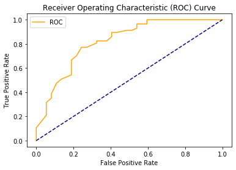
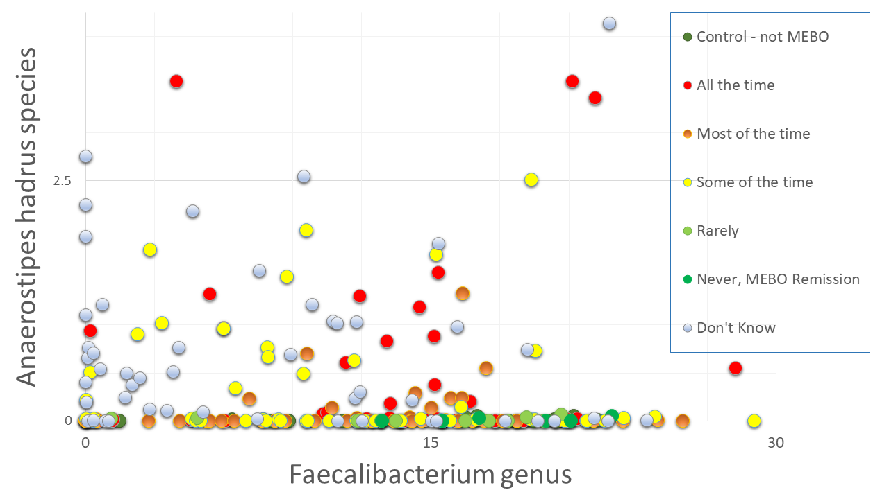

There are many medical conditions for which there are no standard tests for definite diagnosis and no established cures.
Diagnosing and curing Metabolic Body Odor (MEBO) is even more difficult. Especially because MEBO is an umbrella term
for several different conditions.
Even diagnosis of trimethylaminuria (TMAU) - one of metabolic conditions under MEBO umbrella is challenging and useful to less than 30% of MEBO sufferers with the most severe symptoms.
Diagnosis based on smell is unreliable because the odor is often episodic and not everyone can detect it.
Biochemical diagnosis of TMAU requires the measurement of fishy-smelling TMA and odorless TMAO in urine, which should be collected after a high substrate meal.
According to Mitchell and Smith, there are five subtypes of TMAU including (i) primary genetic TMAU (with autosomal recessive inheritance), (ii) acquired TMAU (possibly after viral hepatitis in childhood), (iii) transient childhood TMAU, (iv) transient TMAU associated with menstruation, and (v) precursor overload TMAU (for example, after excessive supplementation with betaine or L-carnitine). 
The main question we were seeking answer to when initiating our
microbiome study was: Can
microbiome analysis be used to diagnose MEBO? Our answer is YES. Even if we combine microbiome profiles of those who tested positive and negative for TMAU with active PATM and just look at the differences between those in remission vs with flareups, machine learning algorithms are able to predict flareups. Overall accuracy is about 76% (see ROC curve above), but it varies from 70% to 86%, better with nonlinear classifiers, and can be improved if we are able to separate different MEBO conditions before hand.
Next question is if we could use simple microbiology tests to diagnose MEBO - e.g. check for overabundance of Alloprevotella or Sutterella species as in our previous blog posts. And the answer is NO. Even though we compiled a list of microbes that contribute to MEBO and PATM and lists of microorganisms improving symptoms, there could be different combinations of "good bacteria" compensating the effect of "bad" ones. We need to simultaneously identify dynamics of ~200 species to provide a diagnosis. Figure on the left shows example of species worsening MEBO - a butyrate-producing bacteria A. hadrus that seem to protect from diarrhea-predominant irritable bowel syndrome (IBS-D) yet might be causing unpleasant odors. Faecalibacterium genus, on the other hand, is in the "lessening odor bacteria" camp, even though its contribution is relatively small. Interestingly, this butyrate-producing bacteria - when in nasal microbiome - is associated with reduced ability to smell and detect odors.
Bacteria counteracting MEBO or PATM symptoms include Bacteroides plebeius (that break down the seaweed-containing polysaccharide), cellulose, methylcellulose and resistant starch degrading bacteria Marvinbryantia and Bifidobacterium bifidum. The relationship with flareups and remission, however, isn't that simple. The figure on the right shows an example. Bacteria Dorea, major gas producer in dogs, responsible for carbon dioxide and hydrogen gases and associated with constipation, is reduced in MEBO subjects in remission, but increases when those in remission try to induce flareups with stress and diet.
Elevated levels of Dorea are also more common in individuals with Multiple Sclerosis, an autoimmune condition, suggesting that the Dorea genus may play a role in immune system activity. Butyrate-producing Subdoligranulum decrease with lessening of symptoms, but is slightly higher in complete remission of former MEBO patients vs non-MEBO controls.
The progress in developing useful diagnostic applications based on microbiome testing is still behind expectations because of the relative lack of consistency, still developing technological approaches and the lack of defined "healthy ranges". Nevertheless, microbiome-based diagnostic and therapeutic applications are possible and will be the next step.
REFERENCES Rath S, Rud T, Pieper DH, Vital M. Potential TMA-Producing Bacteria Are Ubiquitously Found in Mammalia. Frontiers in Microbiology. 2020 Jan 9;10:2966. Koskinen K, Reichert JL, Hoier S, Schachenreiter J, Duller S, Moissl-Eichinger C, Schöpf V. The nasal microbiome mirrors and potentially shapes olfactory function. Scientific reports. 2018 Jan 22;8(1):1-1. Shomorony I, Cirulli ET, Huang L, Napier LA, Heister RR, Hicks M, Cohen IV, Yu HC, Swisher CL, Schenker-Ahmed NM, Li W. An unsupervised learning approach to identify novel signatures of health and disease from multimodal data. Genome Medicine. 2020 Dec;12(1):1-4. Versalovic J, Dore J, Guarner F, Luna RA, Ringel Y. Microbiome-Based Diagnostics: Ready for Applications in Laboratory Medicine?. Clinical chemistry. 2017 Nov 1;63(11):1674-9. Mitchell SC, Smith RL. Trimethylaminuria: the fish malodor syndrome. Drug Metabolism and Disposition. 2001 Apr 1;29(4):517-21. Kant R, Rasinkangas P, Satokari R, Pietilä TE, Palva A. Genome sequence of the butyrate-producing anaerobic bacterium Anaerostipes hadrus PEL 85. Genome Announc.. 2015 Apr 30;3(2):e00224-15. Bouchemal N, Ouss L, Brassier A, Barbier V, Gobin S, Hubert L, de Lonlay P, Le Moyec L. Diagnosis and phenotypic assessment of trimethylaminuria, and its treatment with riboflavin: 1 H NMR spectroscopy and genetic testing. Orphanet journal of rare diseases. 2019 Dec 1;14(1):222.
{kind=link}
{kind=link}
{kind=link}